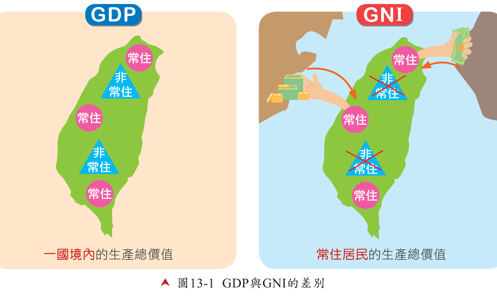
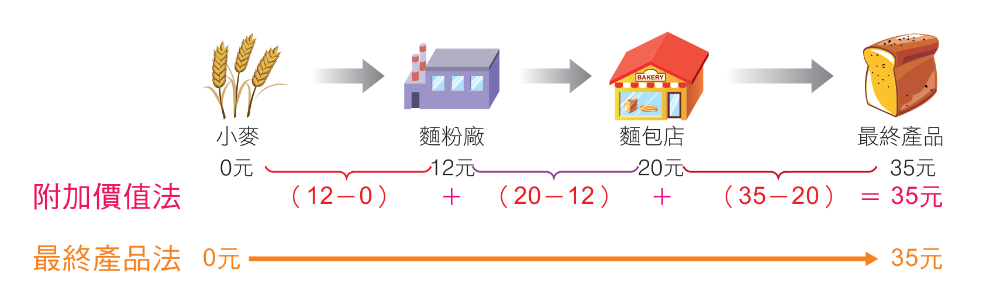
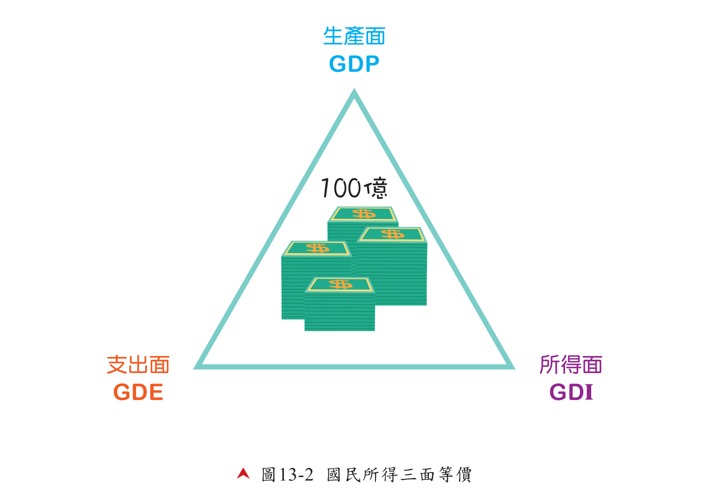
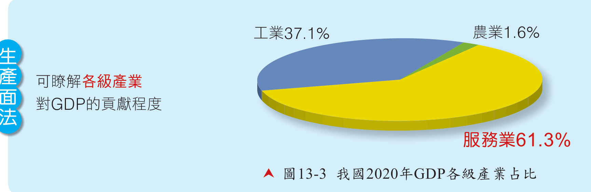
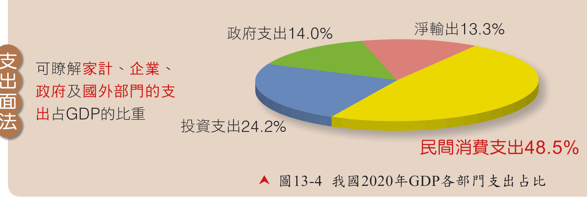
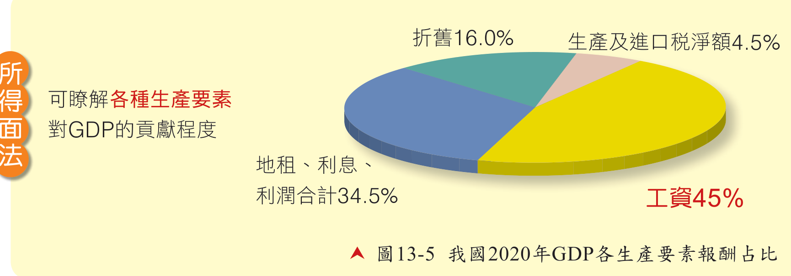
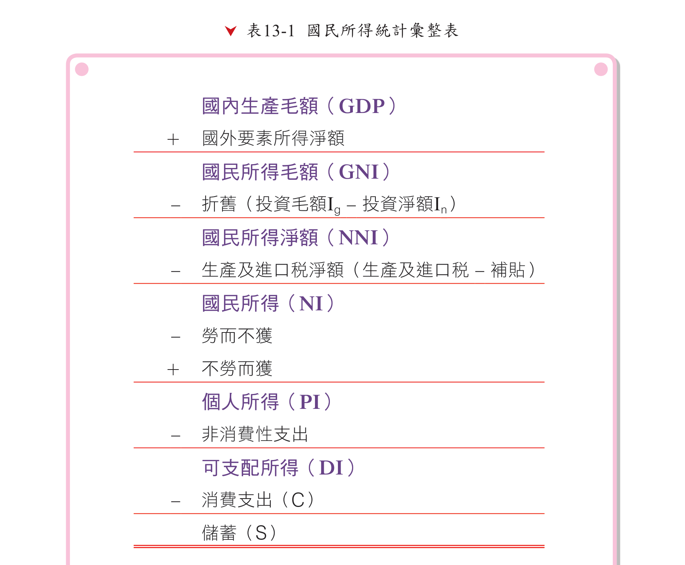
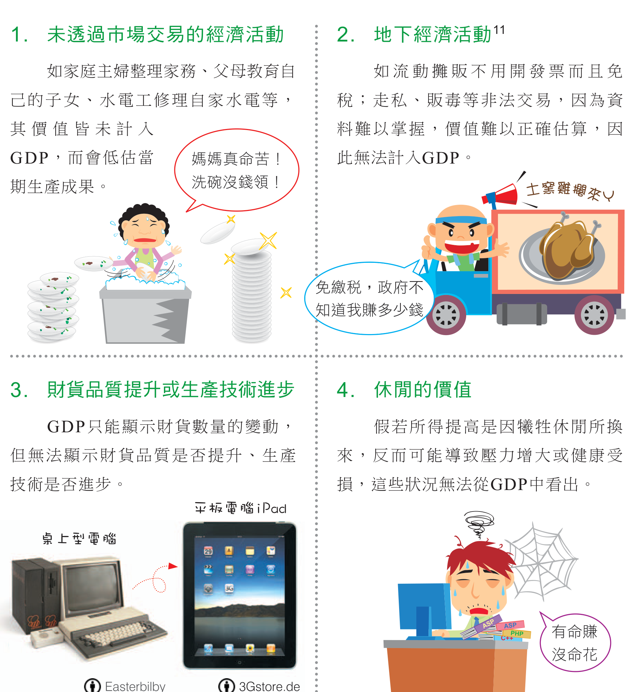

① 13-1-1 國民所得概念與 GDP vs GNI 核心辨析
1929 年紐約股市崩盤引發全球「經濟大恐慌」，造成連續數年嚴重的失業與蕭條，當時各國政府束手無策，亦缺乏客觀總體數據得知民間疾苦。1937 年，美國經濟學家顧志耐（Simon Kuznets）發表了人類歷史上第一個「國民所得會計帳」，以具體量化數據呈現一國總產出與經濟景氣變動，顧志耐因而被尊稱為「國民所得之父」。
我國於 1953 年由行政院主計總處開始彙整編製國民所得帳，並按年發表《國民所得統計年報》。
一、國內生產毛額（GDP）與國民所得毛額（GNI）的定義
- 國內生產毛額（Gross Domestic Product, GDP）：指一國「國境之內」，在一定期間內（通常為一年）所生產之最終產品與勞務的市場價值總和。
👉 屬地主義（重視在地生產）：只要在台灣境內（包含大使館、代表處等治外法權機構）所從事的生產，不論國籍（例如外籍移工、外商企業在台利潤），一律計入台灣的 GDP。 - 國民所得毛額（Gross National Income, GNI，早期稱為國民生產毛額 GNP）：指一國的「常住居民」，在一定期間內所生產之最終產品與勞務的市場價值總和。
👉 屬人主義（重視常住居民）：以在該國境內居住或從事主要經濟活動滿「一年以上」之個人與企業為衡量對象。

二、GDP 與 GNI 的換算公式（公式 13-1）
GNI ＝ GDP ＋ (本國「常住居民」在外國的所得 － 非「常住居民」在本國的所得)
GNI ＝ GDP ＋ 國外要素所得淨額
1. 國外要素所得淨額＝本國常住居民在國外賺取的要素所得 － 外國居民在國內賺取的要素所得。
2. 國際貿易與實例：
- 韓星 BLACKPINK 來台灣開演唱會取得之唱酬 ➔ 計入台灣 GDP，不計入台灣 GNI（屬於非常住居民在台所得）。
- 在台灣工作超過一年之外籍移工取得之工資 ➔ 計入台灣 GDP，亦計入台灣 GNI（因已成為常住居民）。
- 台灣台積電派駐美國廠短於一年工程師之薪資 ➔ 計入台灣 GNI（屬於本國常住居民在國外所得）。
② 13-1-1 GDP 四大黃金特性與「計入 vs 不計入」終極排雷表
課本明定 GDP 具有四大不可分割的本質特性，是統測判斷題的最核心基礎：
一、存量（Stock）與流量（Flow）深層辨析
| 類別 | 經濟意義 | 課本涵蓋代表指標 |
|---|---|---|
| 流量（Flow） | 需設定「一段特定時間長度」（如年、季、月）才能衡量之經濟變動量 | 國內生產毛額（GDP）、國民所得（NI）、民間消費（C）、投資（I）、進出口（X, M）、折舊、政府稅收 |
| 存量（Stock） | 在「某一個特定時點」（如年底、月底）所累積的現存總量 | 資本存量（廠房機器總額）、貨幣供給量（M1B, M2）、國家總財富、外匯存底、國債餘額、全國總人口數 |
二、附加價值法：麵包生產鏈與產值計算
計算 GDP 時，若採「各階段總產值加總」，將會嚴重「重複計算中間產品」；因此可採附加價值法（Value-Added Approach）：
GDP ＝ Σ(各生產階段之附加價值) ＝ 最終產品市價

三、統測終極排雷：「應計入 vs 不計入 GDP」完整對照表
| 項目類別 | 應計入 GDP（✔ 計入） | 不應計入 GDP（✘ 排除） | 統測名師避坑指引 |
|---|---|---|---|
| 市場交易與例外 |
• 受僱保母、管家或清潔工之薪資 • 水電工受僱修理水電之工資 ★ 兩大法定例外（非市場但計入）： ① 自用住宅設算租金（有市場行情可參照） ② 農民留供自用的農產品（生產成果可客觀計價） |
• 家庭主婦料理家務、父母育兒 • 自己粉刷自家房屋、修理自家水管 • 地下經濟：流動夜市未開立發票、走私、販毒、黑市槍械交易 |
「家事無償勞動」與「地下經濟」不計入 GDP 是課本重點；但「自住設算租金」與「自耕自食」依法必須計入！ |
| 生產時間與二手資產 |
• 本期新生產之產品（無論是否售出） • 本期新增存貨（產出未賣視為存貨投資） • 二手中古車、中古屋買賣之「仲介佣金或手續費」 |
• 往年舊貨、中古二手車交易總價 • 骨董、古畫、歷代珍品拍賣價款 • 土地買賣總價款（土地為自然稟賦，非當期人造勞動成果） |
舊貨買賣只是所有權移轉，不代表本期新產出；但房仲與車商提供的「媒介勞務（佣金）」屬於本期新勞務，要計入！ |
| 政府收支與移轉 |
• 政府文具採購、採購巡邏車 • 軍公教人員之公務薪資（政府購買公務勞務） • 政府以實物形式補助家戶（健保醫療給付、老人免費假牙補助、乘車補助） |
• 政府移轉性支付：低收入生活津貼、失業救濟金、災民撫卹金、獎學金、敬老津貼 • 政府公債利息（視為移轉性支出，非實質生產要素報酬） |
移轉性支付沒有對應的實質財貨或勞務回饋，屬於所得重新分配，絕對不能計入 GDP！ |
| 金融與證券投資 |
• 購買全新實體機器設備、建造新廠房 • 新創公司 IPO 募資後「實際購置廠房設備」 • 證券經紀商收取的「股票交易手續費」 |
• 在集中市場買賣現有已上市股票之成交金額與資本利得（價差） • 購買公司債、彩券、樂透彩金 |
買賣既有股票只是金融資產所有權轉移，不計入 GDP；只有券商收取的「服務手續費」才是本期新生產之勞務！ |
③ 13-1-2 國民所得三面等價與三大估算方法全景
在一封閉經濟體系中，廠商生產最終產品供消費者購買（生產面）；消費者支付貨款購買財貨（支出面）；廠商將收入扣除成本後分派給勞動、土地、資本與企業家（所得面）。因此理論上三者統計結果必然完全相同，稱為「國民所得三面等價」。

一、三大估算方法精解
1. 生產面法（供給面法）
從各產業生產端統計，可採「最終產品法」或「附加價值法」。可清楚掌握農、工、服務業三大產業結構。
2. 支出面法（需求面法，統測計算最熱門題型）
- 民間消費支出（C）：耐久財（汽車、家電）、非耐久財（食品、衣物）及勞務服務（醫療、旅遊、理髮）。
- 國內投資毛額（I）：包含固定資本形成（商用廠房設備、住宅建築）與存貨變動（期末存貨 － 期初存貨）。若存貨增加則投資增加。
- 政府消費支出（G）：政府公務消費與資本形成（如建公路、買文具、發薪餉），排除移轉性支付。
- 淨輸出（X － M）：出口（X）減進口（M）。若 X > M 為出超（貿易順差），使 GDP 增加；若 X < M 為入超（貿易逆差），使 GDP 減少。
3. 所得面法（分配面法）
- 要素報酬：受僱人員報酬（工資）＋ 營業盈餘（地租、利息、利潤）。
- 生產及進口稅淨額：政府課徵之間接稅扣除政府對企業之補貼（生產及進口稅 － 補貼）。
- 折舊（固定資本消耗）：投資毛額（Ig）減投資淨額（In）。
二、採行三種估算方法之經濟政策目的（課本圖 13-3 ~ 13-5 現實對照）



④ 13-2 國民所得五大指標階梯遞減體系（GNI → NNI → NI → PI → DI）
國民所得會計帳由「宏觀產出」推導至「家庭真正能支配之荷包」，共形成五大核心指標階梯。此乃統測各型大題、連環計算題的必出之作：

一、五大指標精確定義與扣減公式
• 「毛額到淨額」：扣折舊（GNI － 折舊 ＝ NNI）。
• 「市價到要素成本」：扣間接稅淨額（NNI － 間接稅淨額 ＝ NI）。
• 「NI 到 PI」：勞而不獲要扣掉，不勞而獲要加進去！
• 「PI 到 DI」：扣除個人直接稅與社保非消費支出；剩下的錢要嘛消費（C）、要嘛儲蓄（S）！
二、課本原創經典題推演（吉卜力王國連鎖推導）
【連鎖詳解】
- GDP ＝ C ＋ I ＋ G ＋ (X － M) ＝ 104 ＋ 72 ＋ 32 ＋ (154 － 102) ＝ 260 億元
- GNI ＝ GDP ＋ (6 － 2) ＝ 260 ＋ 4 ＝ 264 億元
- NNI ＝ GNI － 折舊(72 － 54) ＝ 264 － 18 ＝ 246 億元
- NI ＝ NNI － 間接稅淨額(28 － 2) ＝ 246 － 26 ＝ 220 億元
- PI ＝ NI － 勞而不獲(9 ＋ 11) ＋ 不勞而獲(7) ＝ 220 － 20 ＋ 7 ＝ 207 億元
- DI ＝ PI － 非消費支出(1 ＋ 3) ＝ 207 － 4 ＝ 203 億元
⑤ 13-3 GDP 應用限制：物價變動（名目 vs 實質 GDP）、GDP 平減指數與人口變動
單純看 GDP 金額增加，可能只是因為「物價上漲」引發的虛胖，而非實質產量增加。因此必須區分名目與實質 GDP：
一、名目 GDP、實質 GDP 與基期觀念
| 指標名稱 | 計價基礎與數學公式 | 經濟涵義與特性 |
|---|---|---|
| 名目 GDP（Nominal GDP） | Σ(P當期 × Q當期) 以當期（現期）市場價格計算 |
包含「產量變動」與「物價變動」之雙重影響，無法真實反映國民生活水準變化。 |
| 實質 GDP（Real GDP） | Σ(P基期 × Q當期) 以選定之基期價格計算 |
已剔除物價變動的影響，純粹衡量實質產出與貨幣實質購買力。 |
基期的名目 GDP ＝ 基期的實質 GDP！
二、GDP 平減指數（GDP Deflator，公式 13-13）
GDP 平減指數 ＝ 名目 GDP實質 GDP × 100
實質 GDP ＝ 名目 GDPGDP 平減指數 × 100
三、課本表 13-2 電腦與手機推導演練
| 產品種類 | 去年（選定為基期） | 今年（當期） | ||
|---|---|---|---|---|
| 價格（萬元） | 產量（萬台） | 價格（萬元） | 產量（萬台） | |
| 電腦 | 3 | 20 | 5 | 40 |
| 手機 | 1 | 50 | 2 | 60 |
- 去年（基期）：名目 GDP ＝ 實質 GDP ＝ 3×20 ＋ 1×50 ＝ 110 萬元。基期平減指數 ＝ 100。
- 今年（當期）：
• 名目 GDP ＝ 5×40 ＋ 2×60 ＝ 320 萬元（包含物價大漲之影響）。
• 實質 GDP ＝ 3×40 ＋ 1×60 ＝ 180 萬元（純粹反映今年產量）。
• 今年平減指數 ＝ (320 / 180) × 100 ＝ 177.78，表示物價上漲了 77.78%。
四、人口變動與「平均每人實質 GDP」（公式 13-14）
總產出高的國家（如人口大國），若除以龐大人口，每人所得可能很低。因此「平均每人實質 GDP」同時剔除了物價膨脹與人口規模干擾，是國際間比較經濟福利水準最客觀公認的指標。
⑥ 13-4 & 13-5 GDP 衡量缺失、經濟福利指標（NEW、綠色 GDP）與社會福利指標
GDP 雖然是總體產出的重要體檢表，但因以「市場交易」為基礎，存在許多盲點與失真：

一、以 GDP 衡量生產總值之六大缺失
- 未透過市場交易之經濟活動（低估）：家庭主婦無償操持家務、父母育兒、自己修理水電，創造極大福祉卻未計入 GDP。
- 地下經濟活動（低估）：攤販未開發票逃漏稅、現金私下交易、地下黑市，導致政府統計資料失真。
- 無法反映財貨品質提升與科技進步（低估）：現在一萬元的手機性能遠勝三十年前十萬元的笨重電腦，但 GDP 僅反映市價，無法衡量品質與效能之躍進。
- 未計入休閒的價值（高估或失真）：若高 GDP 是靠勞工每天加班、犧牲休閒換來過勞死，人民福利其實下降。
- 忽視負產品與外部成本（高估）：工廠排煙排廢水污染河川、交通擁擠引發車禍，GDP 不但未扣除污染損害，反而將治污設備與醫療修車費用計入 GDP！
- 未反映所得分配之貧富差距：GDP 無法呈現社會財富集中程度（如少數富豪壟斷全國半數所得，平民依然赤貧）。
二、經濟福利指標（NEW 與綠色 GDP）
1. 經濟福利淨額（Net Economic Welfare, NEW / MEW）
由經濟學家諾德豪斯（W. Nordhaus）、杜賓（J. Tobin）與薩穆遜（P. Samuelson）提出，修正 NNI 的缺失：
＋ 未上市產品之價值（家庭主婦家務設算、DIY修理）
＋ 休閒的價值
＋ 地下經濟活動產值
－ 負產品（環境污染等外部成本、菸酒毒品危害）
－ 無益防禦性支出（國防武力、警察、消防等僅為維持安全之支出）
2. 綠色國民所得帳（綠色 GDP，Green GDP）
我國行政院主計總處建構綠色國民所得帳，從「環境生產力、自然資源基礎、環境品質、政策回應」四大面向評估永續發展。
三、社會福利指標
社會福利範疇更廣，涵蓋經濟、政治自由、社會安全與文化。國際常用聯合國人類發展指數（HDI：所得、預期壽命、教育程度）、OECD 幸福指數，以及行政院主計總處選定 43 項指標發布之「福祉衡量指標統計表」。
⑦ 課本原題即測即評 (8 題精選互動測驗)
嚴選課本課後習題與綜合情境題，點擊選項立即獲得即時評分、詳盡解析與統測避坑提示：